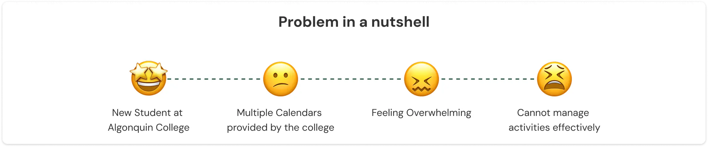

A Centralized Calendar for Algonquin College Students
ROLE:
UX Research
TIMELINE:
September - December, 2024
DELIVERABLES:
Research Findings and Recommendations
PROJECT OVERVIEW:
This project was part of the UX Research course of the Interdisciplinary Human-Centred Design Program at Algonquin College. Its primary goal was to apply research skills to explore the experiences of new Algonquin students in managing academic and personal tasks using multiple college calendars. To gather insights, we employed a mixed-method approach that included surveys and semi-structured interviews with students. Based on our findings, we developed recommendations to enhance the student experience. The project was conducted collaboratively by Chuong Hoang, Amaan Ahmedabadi, Maria Montano, and Pragya Gouti.
1. Why do we start this project?
1.1 The Problem
The onboarding process plays a vital role in helping new students at Algonquin College transition smoothly, especially international students. Moving to a new country for education requires significant effort to balance personal life, academics, and work effectively. Because of that, having tools for time management is important which helps students plan and organize their duties more efficiently. Algonquin College offers various calendars to help students track academic and campus events. However, new students may struggle to familiarize themselves with multiple college-provided calendars from the beginning. They may also find it overwhelming to identify and use the specific calendars they need from various sources, making it difficult to manage their responsibilities effectively.
1.2 Goals and objectives
This study explores the issue by examining task planning habits, analyzing user experiences with multiple calendars, identifying pain points and barriers, and proposing solutions to improve students' satisfaction in using calendars to manage responsibilities. While our study highlights that international students face the most challenges, it also includes domestic students who encounter similar difficulties with the same tools. Thus, the study focuses on both domestic and international students who use college-provided calendars to organize their academic tasks and events. This study aims to answer the question: "What experiences do new students at Algonquin College have when navigating and using multiple college-provided calendars to manage their academic activities, extracurricular engagements, social events, and personal tasks?"
To address this question, the study seeks to achieve the following objectives:
- Objective 1: Identify the method students use to manage schedules, their preferences, usage frequency, and awareness of college calendars.
- Objective 2: Explore student’s experiences with multiple calendars, including tool choices, challenges, and key features they rely on.
- Objective 3: Assess student’s views on college calendars, focusing on difficulties, coping strategies, and suggestions for improvement.
2. Methods and participants
2.1 Methods
Survey and semi-structured interview were used in this study to collect quantitative and qualitative data, respectively.
Why Survey?
- Was used to collect quantitative data about users.
- The goal was to understand users' awareness of college-provided calendars, their habits in using them, and their overall experiences.
- Served as a screener to select participants for semi-structured interviews.
- Out of 127 survey responses, 102 useful responses were analyzed.
Why interview?
- Was used to collect qualitative data about users.
- The goal was to explore users' positive and negative experiences with college-provided calendars and identify potential solutions.
- 12 interviews were scheduled, both in-person and virtually, with 10 successfully conducted.
2.2 Participants
The participants for this research are the new Algonquin College students who are in their first semester (level 1).
3. Findings and Recommendations
Finding 1: Students struggle with using multiple tools to manage their tasks and prefer an integrated platform.
Students struggle with managing tasks across multiple disconnected tools, leading to inefficiencies and missed academic deadlines or important events. The lack of integration between institutional platforms like Brightspace and personal calendars complicates organisation, while accessibility and compatibility issues—such as some calendars being easily accessible on mobile devices while others are not—add further challenges. To address this, students emphasize the need for a centralized, well-integrated system that simplifies scheduling and enhances usability, ultimately reducing friction and improving task management.
Recommendation: A centralized calendar system should be implemented to help students arrange their tasks and activities. This system should incorporate institutional tools together with personal calendars such as Google Calendar and Apple Calendar. Incorporating features such as real-time notifications, due date monitoring, and multi-device support can help greatly improve the effectiveness and efficiency of this calendar. Thus, by providing students with a single hub, they will be able to manage their time and tasks related to studies and personal life without the need to switch between different applications.
Finding 2: Students rely on certain calendar features to manage their tasks effectively.
Students highly value platforms that enhance task management, with Pulse standing out for its “Upcoming” visual tracker, notifications, and reminders. These features simplify academic organization and improve productivity. Future solutions should incorporate these proven functionalities to better support students in managing their responsibilities.
Recommendation: To boost student engagement and productivity, existing platforms or a future centralised system should integrate visual tools like task progress graphs, timeline views, and smart reminders. Adopting Pulse’s tracking features will streamline planning, making organization effortless and adaptable for all learners.
Finding 3: Students are busy balancing their academic and personal lives.
Students juggle academic responsibilities, extracurricular activities, and social events, particularly international students integrating into Ottawa’s culture. Their scheduling approach prioritises flexibility, emphasising daily and weekly planning over long-term commitments. They manage tasks based on urgency, adapting to shifting academic and personal demands. To stay organised, students rely on multi-device tools that sync seamlessly across phones, tablets, and laptops. Moreover, the ability to personalise these tools to fit individual preferences allows students to balance academic and personal responsibilities more effectively, making scheduling a smoother and less stressful process.
Recommendation: College-provided calendars should be seamlessly synchronised across multiple devices, including phones, laptops, and tablets, ensuring easy access in various contexts such as on the bus or during class. Additionally, implementing features that allow for personalisation with a simple, intuitive adjustment process will enhance flexibility, enabling students to manage their time more efficiently and adapt to changing priorities with ease.
4. Limitations
Although this study provides valuable insights into the experiences of Level 1 students using college-provided calendars, it has certain limitations that affect the overall impact of its findings. Firstly, the survey primarily gathered input from Level 1 international students, with only two out of ten participants being domestic students. That means the study does not include enough data from domestic students, whose experiences may differ considerably from those of their international peers. Additionally, the research did not include insights from subject matter experts (SMEs), which could have provided greater depth to the findings. Moreover, the data collected may be biased because the small sample size does not represent the broader student population. Participants may have responded based on personal preferences or immediate experiences, which might not accurately reflect the experiences of all students.
5. Learnings
This research study was my first experience conducting a full research process, and it was a valuable learning opportunity. I developed essential skills in creating a research plan and learned how to design interview protocols properly to generate useful insights. I also realised the importance of pilot interviews, as they help identify issues and refine the process before formal data collection. On top of that, I got hands-on experience with ResearchOps, including participant recruitment, interview scheduling, and data management, which are crucial for ensuring a smooth and organised research process. Overall, this study gave me a solid foundation in conducting research in a structured and organised way
Summary of Research Process:
- Step 1: Developed a research plan.
- Step 2: Designed surveys, interview protocols, and consent forms, then conduct a pilot interview.
- Step 3: Launched the survey to screen and identify suitable participants for interviews.
- Step 4: Recruited eligible participants, schedule interviews, and conduct in-depth semi-structured interviews.
- Step 5: Analysed data, identify themes and insights, and provide recommendations.